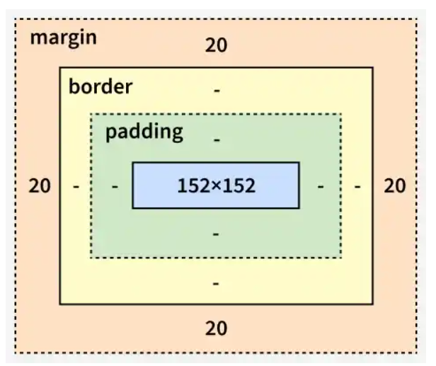

CSS margins are used to create space outside an element’s border, helping to separate it from other elements on a webpage. They help in organizing the layout and preventing content from appearing too close together.
